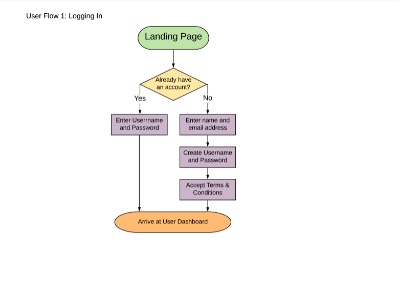
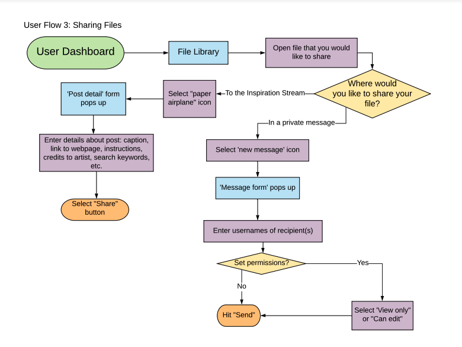
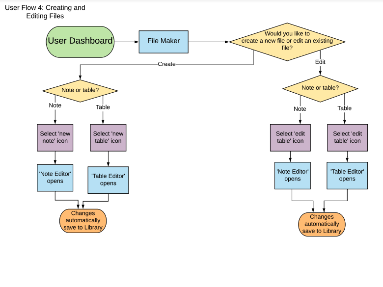
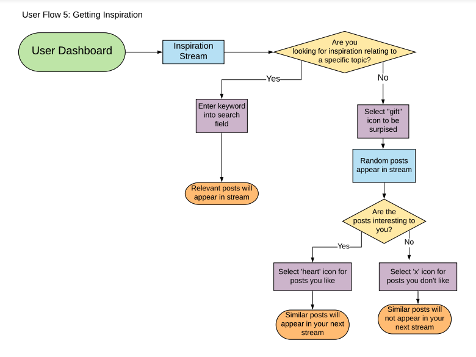
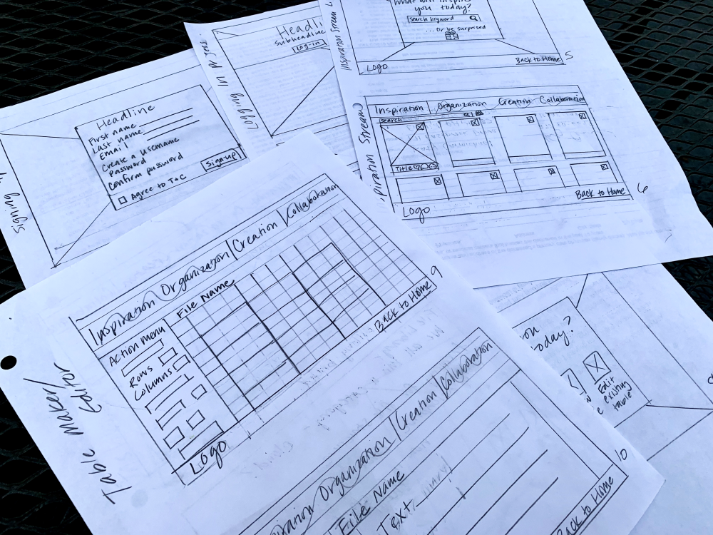
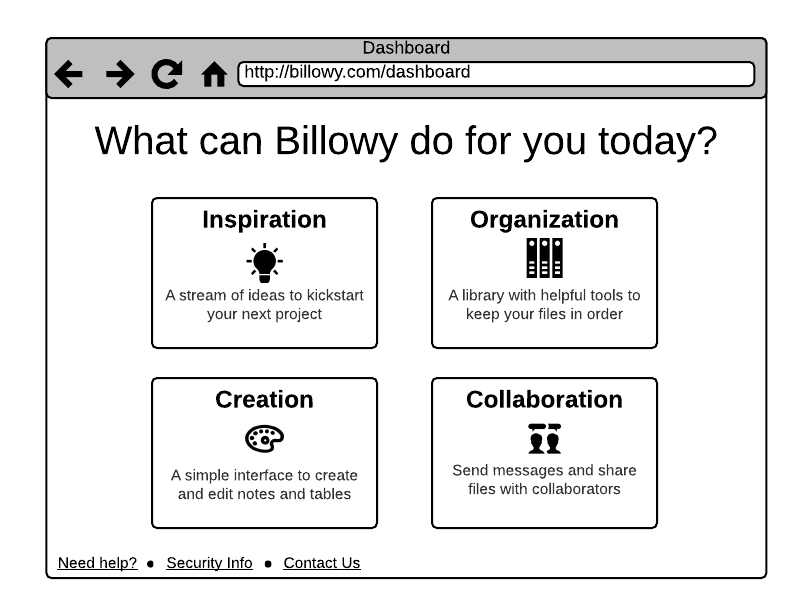
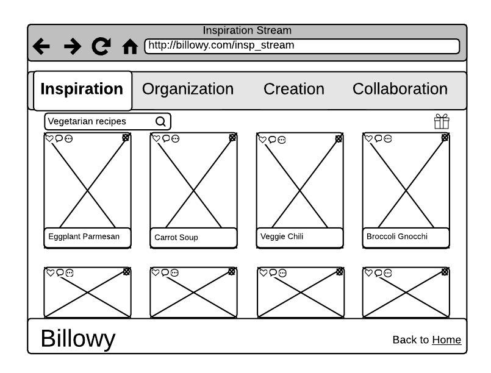
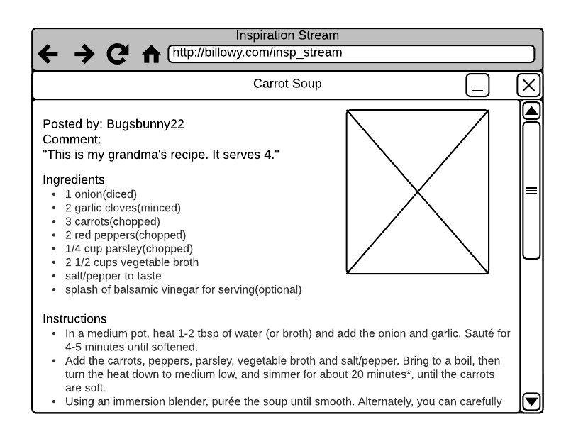
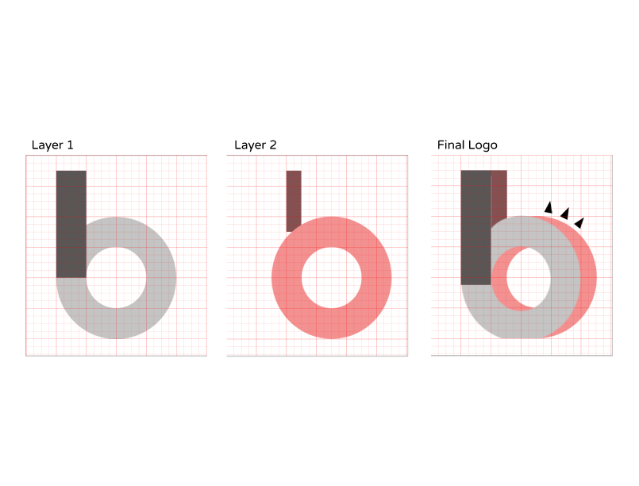
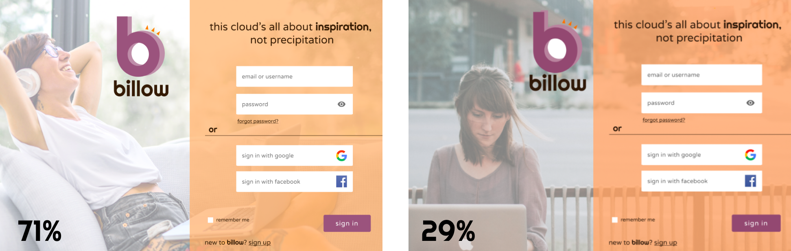

Case Study: billow
Billow goes above and beyond just cloud storage. It’s an idea-sharing, adventure-planning, business-running, home-improving, confidence-boosting community for women who are far from basic.
See the prototype
The majority of cloud storage apps on the market offer the same basic features, in the same, strictly functional ways. They’re designed in a “one size fits all” manner that lacks personality and style.
Different users have different needs and desires that aren't being met by current offerings.
Build a new cloud storage platform that is thoughtfully and stylishly designed so that it is fun and inspiring to use.
Focus on creative and motivated female users age 25-54, who are looking for a community of like-minded individuals.
Leverage “the network effect” to generate growth through collaboration.
In my role as designer, I was responsible for making all of the design and branding decisions and for producing all of the deliverables.
I began by conducting a User Survey based on cloud storage usage. I wanted to find out what features are most important to users and how receptive they would be to the addition of a social network aspect. Here are some of the most valuable findings:
Most important features of a new cloud storage site, according to potential users:
1. Easy to use
2. Ability to share large
3. FREE!
97% said they would be interested in an app that fostered connection and collaboration among users.
From there, I wanted to take a closer look at the cloud storage market landscape. In order to gain a better understanding of current options, I performed a Competitive Analysis on three popular brands:
I discovered that advanced storage and security functionalities serve as the major selling points for these platforms. Paid subscriptions come with additional protections, higher storage limits, and business operation functions. For Billow, secure file storage would be important, but it would be performed with individuals in mind, as opposed to large businesses and corporations.
Also, while the interfaces of the Box, Google Drive and OpenDrive prove to be intuitive with simple and bold design choices, they exhibit little character. With this observation, I knew that creating a bright, stylish and playful interface for Billow would be a key attraction for our target users.
I developed a User Persona in order to guide my decisions moving forward. By carefully considering her lifestyle, interests and tastes, it was easier for me to stay on the right track.
Motivations
Grace is an art teacher looking for a way to store and organize new lesson ideas. Pinterest has been her go-to for inspiration, but she finds the interface confusing. She also creates pottery and sculpture in her spare time and hopes to be able to one day sell her pieces for extra income.
Goals
1. Free to use
2. Inspiration for lessons
3. Handy organization features
Frustrations
1. Not able to share files easily
2. Too many features
3. Boring and uninspired design
Bio
Grace is single with no children. She is very dedicated and invested in her job, but often frustrated by a lack of resources. She is “just tech savvy enough” and isn’t interested in an app with complicated features.
At this point in the process, I brainstormed and evaluated the tasks of an “Inspired & Organized” Billow user. I first listed them in order of importance...
High Priority User Stories
I want to upload and store files in the cloud.
I want to share files with others.
I want to organize files into categories.
I want to edit existing files.
I want to create new files.
Medium Priority User Stories
I want inspiration for my projects.
I want to collaborate with others on projects.
Lower Priority User Stories
I want to control the permissions of those I share files with.
I want to know my files are secure.
Then, I created accompanying User Flows to serve as guides for creating the wireframes...
User Flow Slides:




❮
❯
Wireframe Sketches:

Slides of Low-fidelity Digital Wireframes:



❮
❯
Building the wireframes helped me to reevaluate and clarify the scope of the project. However, in order to truly gauge my progress, I knew I needed the insights gained from Usability Testing.
I recruited random internet users to perform a series of tasks (logging in, creating an account, uploading a file, etc.). I observed their interactions with the prototype and asked follow-up questions.
Findings from Usability Testing:
1. Combine/eliminate the landing page.
2. Replace some icons to help clarification of purpose.
3. Simplify certain features in Inspiration Flow.
Earlier examination of the competition showed that instituting a visually-appealing design would help to make Billow stand out. I created a Moodboard to establish the vibe and themes that would represent the brand as strong, artistic, quirky, creative, happy, energetic, and bold. The color palette and typography followed suit.
Moodboard:

Typography:
Headline
(Righteous font / Bold / Size 38px)
Subheadings
(Righteous font / Regular / Size 24px)
Body text should look like this.
(Varela Round / Regular / Size 18px)
Logo Development Slides:

❮
❯
After the most important visual elements were in place, I was ready to dive in to the High-Fidelity Mockups. With the wireframes as my base, I added color, fonts, imagery and icons. For instances when I wavered between designs, I instituted Preference Tests for outside opinions.
For example, out of the two below designs, the first option was the preference among the majority of those questioned (with 71% of the vote).

And finally, with my high-fidelity mockups converted into a clickable prototype, it was time for another round of Usability Testing. Like before, I asked users to complete certain tasks so that I could observe any potential issues or pain points before finalizing the design.
While the overall results were encouraging, the participants’ experiences led to some well-received changes.
Findings from 2nd Round of Usability Testing:
1. Add a site summary to the homepage.
2. Tidy up the layout of the onboarding pop-ups.
3. Move the logo down on the left navigation menu.
4. Show the recipient's username and photo when sending a message.
5. Offer additional layout options to view files.
See the Prototype
Careful consideration of the features lacking from current cloud storage offerings, along with direct interactions with potential users, has led to a fully developed and highly intuitive website. Billow’s unique personality also helps it to stand out among other websites and will attract enthusiastic users into its community.
Reflecting upon the process, I learned which activities to prioritize when developing future projects. Speaking with potential users and allowing them to test initial designs was incredibly helpful in staying within scope and eliminating unimportant features. Moving forward, I hope to engage in even more rounds of testing and surveys.
Back to top
See more Projects